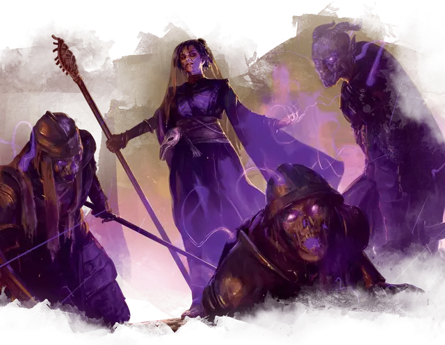

Волшебник школы Некромантии
Necromancer Wizard
Средний Гуманоид, любое мировоззрение

Класс Доспеха 12 (15 с доспехами мага)
Хиты 110 (20к8 + 20)
Скорость 30 футов
| мод | спас | ||
|---|---|---|---|
| СИЛ | 9 | −1 | −1 |
| ЛОВ | 14 | +2 | +2 |
| ТЕЛ | 12 | +1 | +1 |
| мод | спас | ||
|---|---|---|---|
| ИНТ | 17 | +3 | +7 |
| МДР | 12 | +1 | +5 |
| ХАР | 11 | +0 | +0 |
Навыки История +7, Магия +7
Сопротивление урону некротическая энергия
Чувства пассивное Восприятие 11
Языки любые четыре языка
Опасность 9 (5000 опыта)
Бонус мастерства +4
Среда обитания Город, Арктика
Действия
Мультиатака. Некромант совершает три атаки Магической вспышкой.
Магическая вспышка. Рукопашная или Дальнобойная атака заклинанием: +7 к попаданию, досягаемость 5 футов или дистанция 120 футов, одна цель. Попадание: 25 (4к10 + 3) урона некротической энергией.
Использование заклинаний. Некромант накладывает одно из следующих заклинаний, используя Интеллект в качестве базовой характеристики (Сл спасброска от заклинаний 15):
• Неограниченно: пляшущие огоньки [dancing lights], волшебная рука [mage hand], фокусы [prestidigitation];
• 2/день каждое: проклятие [bestow curse], переносящая дверь [dimension door], доспехи мага [mage armor], паутина [web];
• 1/день каждое: круг смерти [circle of death].
Бонусные действия
Призыв нежити (1/день). Некромант магически призывает пять скелетов [skeleton] или зомби [zombie]. Призванные существа появляется в свободном пространстве в пределах 60 футов от некроманта, которому они подчиняется. Они ходят сразу после некроманта. Они существуют 1 час, пока они, либо призыватель, не умрут, или пока некромант не отпустит их бонусным действием.
Реакции
Мрачная жатва (1/ход). Когда некромант убивает существо с помощью урона некротической энергией, некромант восстанавливает 9 (2к8) хитов.
Описание
Волшебники
Волшебники стремятся к магической силе, изучая тайные тексты. Некоторые путешествуют по миру в поисках эзотерических томов, в то время как другие обучают младших волшебников или сотрудничают с коллегами для создания новых заклинаний.
Волшебник школы Некромантии
Некроманты изучают взаимодействие жизни, смерти и посмертия. Некоторым нравится выкапывать трупы, чтобы создавать рабов–нежить. Некоторые некроманты выкапывают или покупают трупы, чтобы создать себе слуг Нежить. Некоторые вместо этого используют свои силы во благо, охотясь на Нежить.